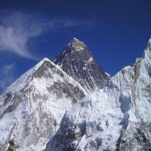

Incredible India
One of the oldest civilisations in the world, India is a mosaic of multicultural experiences. With a rich heritage and myriad attractions, the country is among the most popular tourist destinations in the world.extending from the snow-covered Himalayan heights to the tropical rain forests of the south. As the 7th largest country in the world, India stands apart from the rest of Asia, marked off as it is by mountains and the sea, which give the country a distinct geographical entity.Fringed by the Great Himalayas in the north, it stretches southwards and at the Tropic of Cancer, tapers off into the Indian Ocean between the Bay of Bengal on the east and the Arabian Sea on the west. As you travel the expanse of the country, you are greeted by diverse nuances of cuisines, faiths, arts, crafts, music, nature, lands, tribes, history and adventure sports. India has a mesmeric conflation of the old and the new. As the bustling old bazaars rub shoulders with swanky shopping malls, and majestic monuments accompany luxurious heritage hotels, the quintessential traveller can get the best of both worlds. Head to the mountains, enjoy a beach retreat or cruise through the golden Thar, India has options galore for all.
Popular In India
Countless Temples
If you were wondering what India is famous for, then I can’t make this list without mentioning its many beautiful temples.The country is home to over 2 million temples which attract people worldwide who come to seek spirituality.Some of the famous holy temples India is famous for that you shouldn’t miss visiting while in the country include; the golden temple, Konark temple, Sanchi stupa, and Meenakshi temple.India is full of historical temples and incredible architecture. In many iconic locations, these two factors combine to deliver unmissable ancient temples that should be at the top of your travel bucket list. We’ve come up with some of our favourites, some of which you can see.We have learnt in Indian history that temples in ancient times were once social hubs where people congregated. They were also sites where the arts of dance, music and combat were honed and have been passed down for generations. Today, these temples remind us of our past and the architectural brilliance of craftsmen in those days.
Indian Food/ Cuisine
One of Indias’ famous things is its mouth-watering spicy food. The country offers rich and deliciously flavored dishes unique in every taste being the largest producer and consumer of spices in the world.If you are a foodie and happen to travel to India, you will love their full-flavored delicious food.From the famous chicken tikka masala which is actually my favorite Indian dish, Murgh Makhani (butter chicken), Tandoori chicken, Naan to so many other palatable dishes, the Indian cuisine is unmatched and it will leave you licking your fingers if you love spiced food! Actually, even their tea is spiced up!The fun part is that every region/state has its own unique signature recipe so prepare your taste buds to sample the variety of unique dishes.The traditional food of India has been widely appreciated for its fabulous use of herbs and spices. Indian cuisine is known for its large assortment of dishes. The cooking style varies from region to region and is largely divided into South Indian & North Indian cuisine. India is quite famous for its diverse multi cuisine available in a large number of restaurants and hotel resorts, which is reminiscent of unity in diversity. The staple food in India includes wheat, rice and pulses with chana (Bengal Gram) being the most important one. In modern times Indian pallete has undergone a lot of change. In the last decade, as a result of globalisation, a lot of Indians have travelled to different parts of the world and vice versa there has been a massive influx of people of different nationalities in India. This has resulted in Indianisation of various international cuisines. Nowadays, in big metro cities one can find specialised food joints of international cuisines. To know more about the Indian traditional food, read on.
Their Family Bond
 One of the unique things about the Indian culture is that it promotes family bonds. Unlike other societies, Indians live in a joint family structure where you can find three generations living under one roof.Different from other cultures where one gets married and starts a new life with their wife/husband away from the family, in India, the couple lives together with their in-laws.In the Indian culture, family plays an important role in their lives and most of them live in nuclear families.Indian society is collectivistic and promotes social cohesion and interdependence. The traditional Indian joint family, which follows the same principles of collectivism, has proved itself to be an excellent resource for the care of the mentally ill. However, the society is changing with one of the most significant alterations being the disintegration of the joint family and the rise of nuclear and extended family system. Although even in today's changed scenario, the family forms a resource for mental health that the country cannot neglect, yet utilization of family in management of mental disorders is minimal. Family focused psychotherapeutic interventions might be the right tool for greater involvement of families in management of their mentally ill and it may pave the path for a deeper community focused treatment in mental disorders. This paper elaborates the features of Indian family systems in the light of the Asian collectivistic culture that are pertinent in psychotherapy. Authors evaluate the scope and effectiveness of family focused psychotherapy for mental disorders in India, and debate the issues and concerns faced in the practice of family therapy in India.
One of the unique things about the Indian culture is that it promotes family bonds. Unlike other societies, Indians live in a joint family structure where you can find three generations living under one roof.Different from other cultures where one gets married and starts a new life with their wife/husband away from the family, in India, the couple lives together with their in-laws.In the Indian culture, family plays an important role in their lives and most of them live in nuclear families.Indian society is collectivistic and promotes social cohesion and interdependence. The traditional Indian joint family, which follows the same principles of collectivism, has proved itself to be an excellent resource for the care of the mentally ill. However, the society is changing with one of the most significant alterations being the disintegration of the joint family and the rise of nuclear and extended family system. Although even in today's changed scenario, the family forms a resource for mental health that the country cannot neglect, yet utilization of family in management of mental disorders is minimal. Family focused psychotherapeutic interventions might be the right tool for greater involvement of families in management of their mentally ill and it may pave the path for a deeper community focused treatment in mental disorders. This paper elaborates the features of Indian family systems in the light of the Asian collectivistic culture that are pertinent in psychotherapy. Authors evaluate the scope and effectiveness of family focused psychotherapy for mental disorders in India, and debate the issues and concerns faced in the practice of family therapy in India.
The Himalayas
 The Himalayas are a beautiful mountain range in South Asia that stretches across six countries, including India especially the northeastern portion of the country.The Indian Himalayan Region spans 11 Indian states and union territories and is an important landmark in Asia that attracts adventurous tourists.It might be shared among a number of countries but India has the most share of the Himalayas covering about 460000 km which constitutes 16.2% of the country’s total geographical area.The Himalayas stretch across the northeastern portion of India. They cover approximately 1𬔀 mi (2𬐀 km) and pass through the nations of India, Pakistan, Afghanistan, China, Bhutan and Nepal. The Himalayan range is made up of three parallel ranges often referred to as the Greater Himalayas, the Lesser Himalayas, and the Outer Himalayas.